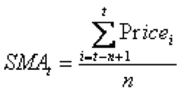

Technical Analysis is the financial methodology of using statistical data of financial instruments in order to make predictions about the market. The used instruments can be anything that is traded in the open market, including equities, derivatives, and fixed income. The data that is pulled & used for the analysis can be a variety of information from the instrument, from closing prices, highs/lows of certain time periods, volume of trading, etc. When this information is applied to a formula, the result is what is known as an “indicator”. This website was designed to provide multiple of these indicators in order to help people analyze stock prices to better help their trading. If you would like to learn more about technical analysis, click here.
To use this website, simply enter the ticker symbol of a stock that you would like to view in the bottom left-hand corner of the site. Add a value for the SMA period as well to customize the SMA value that will be calculate. Thedefault for the website is AAPL as the ticker & a 20-day SMA. If the SMA is left blank when searching a stock, the 20-day SMA for that ticker will be used.
A Simple Moving Average (SMA) is a calculation of average prices (typically closing price) of a financial instrument over a given period of time. When multiple days have their individual SMA calculated, these points are normally joined together, forming a line. Standard periods for SMA include the 20, 50, 100, & 200 day SMA’s. Some standard signs of SMA include the “Death-Cross” (a bearish indicator where the a short-term SMA, typically the 50-day SMA, crosses below a long term indicator, typically the 200-day SMA) and the “Golden-Cross” (a bullish indicator where a short term indicator, typically the 50-Day SMA, crosses above a long-term indicator, typically the 200-day SMA). Traders will also use SMA relative to a stock’s price to make predictions about where the stock will be going. For example, if a stock has recently began trading below a given SMA, it could be a bearish sign for the stock. Conversely, if a stock has recently began trading above a given SMA, it could be a bullish sign. Learn more about SMA by clicking here.
Formula for calculating SMA for day 't' with a 'n' number of periods